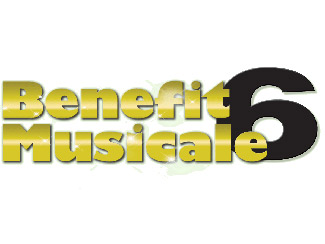
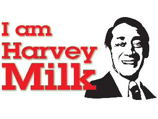

2013 - 2014 Season
- December 7, 2013
- March 14, 2014
- June 7, 2014

We sing to inspire, encourage, and sustain excellence in the choral arts and to achieve a gay-affirming presence in the greater Miami Valley.
Have you ever wanted to sign or perform on the Victoria Theater stage?
We sing to inspire, encourage, and sustain excellence in the choral arts and to achieve a gay-affirming presence in the greater Miami Valley
We are committed to living our mission by challenging ourselves to continually reach for excellence in choral music. We offer a broad repertoire in a variety of visible and accessible venues. We forge community partnerships. We educate the community at large about the value of diversity.
We believe in the inherent worth of all humanity. We build bridges of understating through our collaborative community partnerships. We create an enjoyable social environment for our membership through fellowship and brotherhood. We seek to open minds and eliminate prejudice by honoring and celebrating our differences.
Thank You! for your interest in the Dayton Gay Men’s Chorus. We sing a broad range of musical styles from the serious to the sublime…heavy to hysterical. We accept new members at the first three rehearsals in August/September for our Holiday Concert and in January for our Spring Concert.